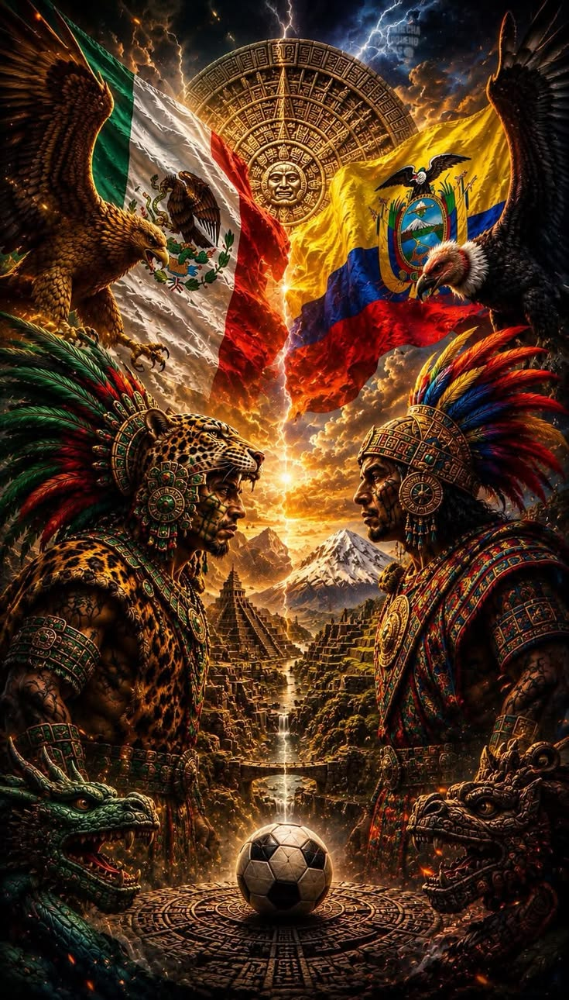
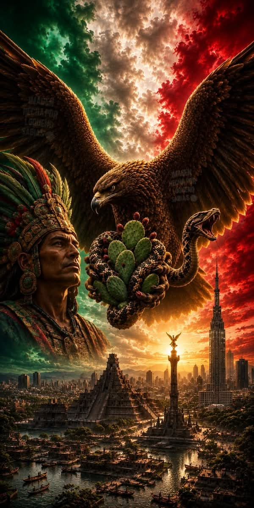
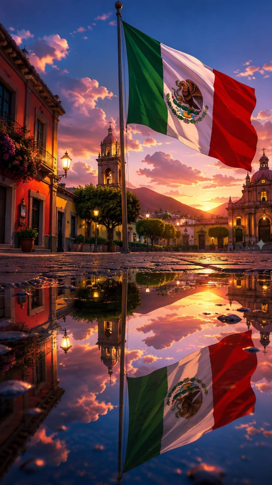
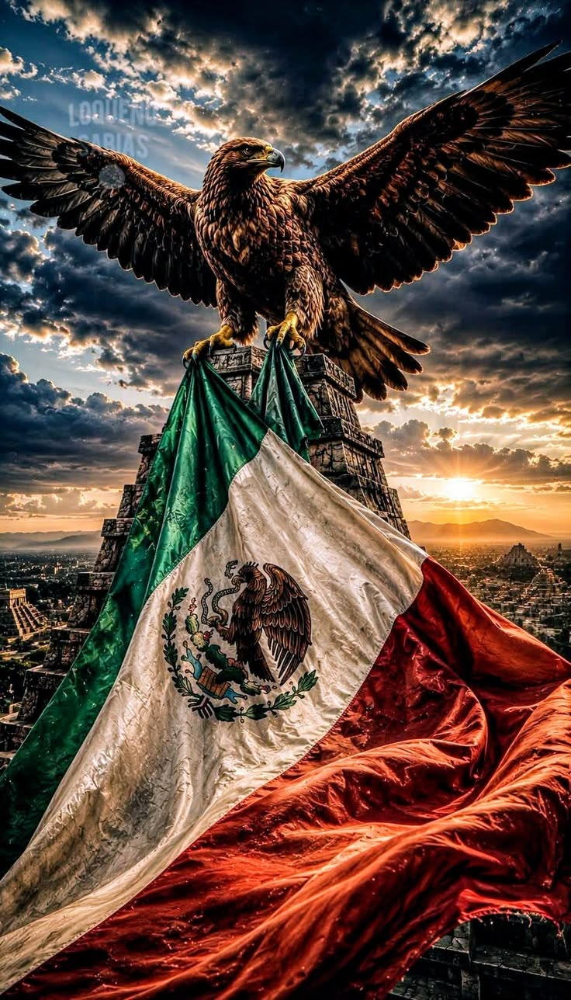
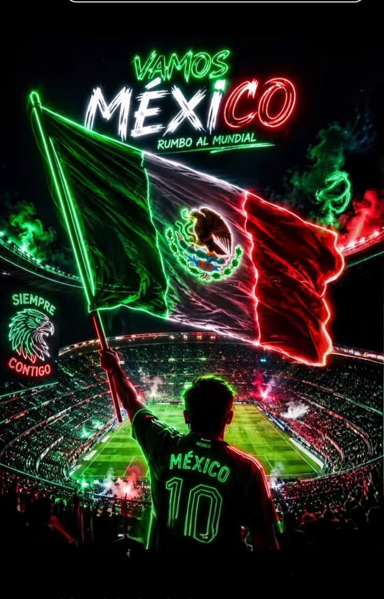
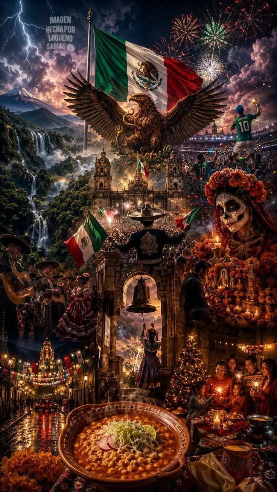
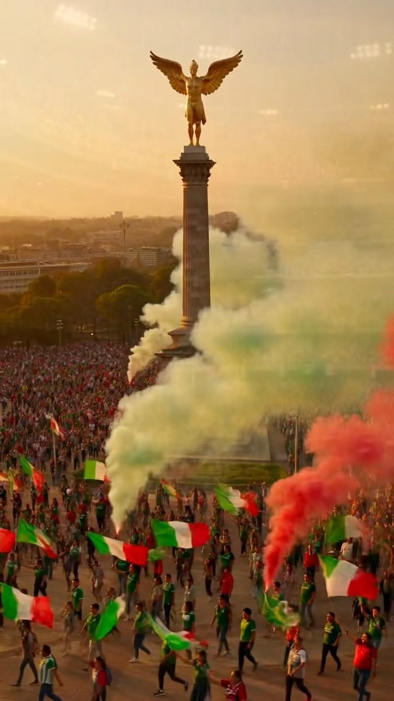
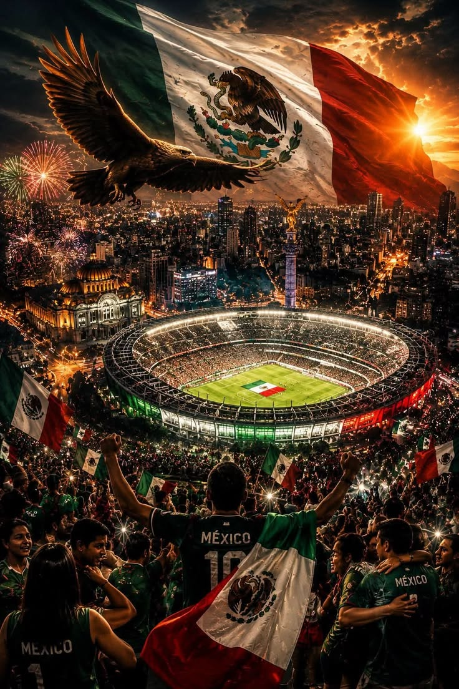
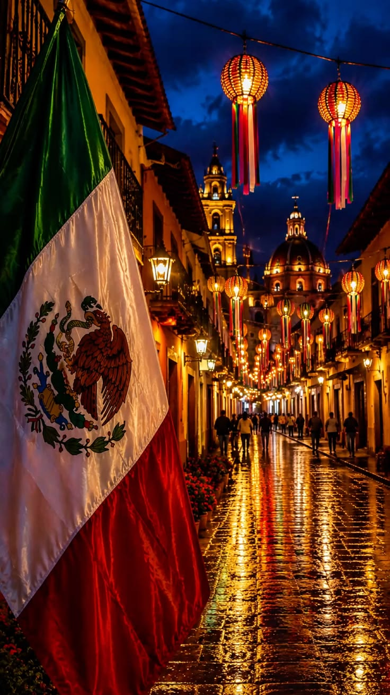

MÉXICO - TITANES






.jpg)



MÉXICO 2 - LA HISTORIA ANTIGUA
La historia antigua de México es una de las más poderosas y respetadas del mundo. Antes de la llegada de los españoles existieron grandes civilizaciones como los olmecas, los mayas y los aztecas. Estos pueblos construyeron pirámides, ciudades y templos que aún hoy nos asombran por su precisión. Su conocimiento en astronomía, matemáticas y agricultura era sumamente avanzado para su tiempo. Fueron guerreros valientes, sabios y profundamente conectados con la naturaleza. Su legado sigue vivo en nuestra sangre y cultura. Honrar su historia es honrar nuestra identidad como mexicanos. Es una historia de poder, de honor y de resistencia. Una herencia que como TITANES debemos llevar con orgullo.
Los mexicas, conocidos como aztecas, fundaron la gran Tenochtitlán sobre un lago, guiados por la señal del águila devorando una serpiente. Esa visión sagrada es hoy nuestro escudo nacional y símbolo de fuerza. Construyeron una ciudad más grande y ordenada que muchas de Europa en ese tiempo. Tenían mercados, escuelas, leyes y un ejército disciplinado y temido. Su organización social se basaba en el respeto, la disciplina y el trabajo comunitario. Creían en el honor del guerrero y en el valor de la palabra empeñada. Su arquitectura reflejaba poder y conexión con los dioses. Fueron ingenieros, agricultores y estrategas excepcionales. Su historia no es de derrota, sino de grandeza que perdura.
Los mayas, por su parte, fueron maestros del tiempo y de las estrellas, con una sabiduría que aún estudia la ciencia moderna. Levantaron ciudades como Chichén Itzá, Palenque y Uxmal con alineaciones astronómicas perfectas. Su escritura jeroglífica es una de las más completas de la antigüedad americana. Vivían con respeto por la tierra, el agua y el maíz como sustento sagrado. Eran un pueblo de conocimiento, de paz y también de valientes guerreros cuando era necesario. Su calendario demostraba un entendimiento profundo del cosmos y del ciclo de la vida. Nos enseñaron que el tiempo es orden y que todo tiene un propósito. Su cultura es orgullo, inteligencia y espiritualidad. Un ejemplo de que México siempre ha sido tierra de gigantes.
La historia antigua de México nos recuerda que venimos de titanes, de jaguares y de águilas que no se rendían. Cada pirámide es un testimonio de trabajo en equipo, de visión y de fe inquebrantable. Cada códice es una muestra de que valoraban la memoria y el conocimiento escrito. No fueron pueblos salvajes, fueron civilizaciones de alto nivel y honor. Hoy su sangre corre por nuestras venas y su fuerza nos inspira a seguir adelante. Conservar su historia es conservar nuestro poder como nación. Como Jesús Eduardo y marca TITANES, llevo esa fuerza con respeto y profesionalismo. México antiguo vive en nosotros cada día. Esa es la historia que nos hace invencibles.
© 2026 Jesús Eduardo - TITANES